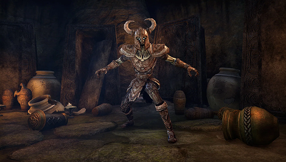
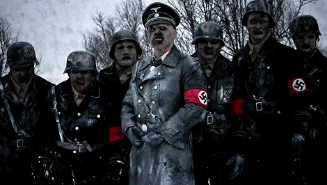
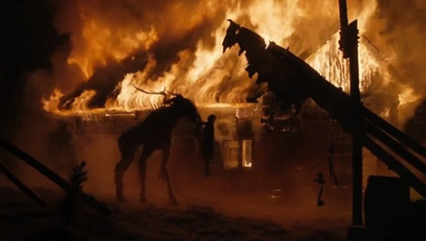
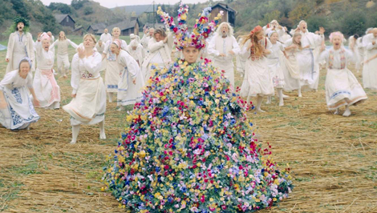
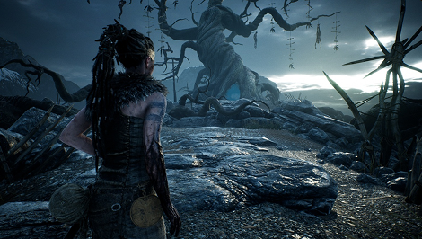
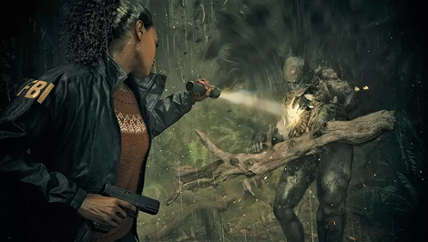

Скандинавия производит особый тип хоррора — и это не случайность, а география. Шесть месяцев полярной ночи, бесконечные леса, фьорды, острова, ощущение что за ближайшим деревом начинается другой мир — всё это формировало нордическую психологию на протяжении тысячелетий. Скандинавский страх — это не страх темноты в смысле «не знаю, что там»: это страх темноты в смысле «знаю, что там, и оно не злое и не доброе — оно просто другое». Нордическая мифология принципиально отличается от христианской: в ней нет абсолютного добра и абсолютного зла. Есть асы и великаны, и они воюют, и в конце проиграют все — Рагнарёк неизбежен. Из этого фатализма вырастает особый тип хоррора: не крик, а тихое угасание.
Задолго до Брэма Стокера скандинавы придумали собственную нежить — драуга. В отличие от вампира, драуг лишён какой‑либо романтики: это просто мертвец, который отказывается лежать в земле, охраняет своё имущество и убивает тех, кто приближается к его кургану. Никакого трагического бессмертия, никакой аристократической бледности — только злоба, запах разложения и нечеловеческая сила. Именно из этого образа выросли норвежские зомби в «Мёртвом снеге» (2009): нацистские зомби в горах — это буквально дроугры в современной упаковке, стерегущие украденное золото. Норвежские режиссёры взяли мифологический архетип и просто сменили исторический контекст.


Два главных скандинавских хоррора последнего десятилетия — британский «Ритуал» и американо-шведское «Солнцестояние» — работают с нордической мифологией по‑разному, но с одинаковым результатом. «Ритуал» отправляет группу туристов в шведский лес, где культ поклоняется ётуну — великану из «Старшей Эдды». Исследователи из Foreign Policy отмечают показательную деталь: авторы переворачивают нордическую космологию — в реальных сагах великаны были врагами богов, а не объектами поклонения. Но именно это переворачивание работает: Скандинавия пугает не точным воспроизведением мифа, а его деформацией. «Солнцестояние» использует ättestupa — ритуальное самоубийство стариков, описанное в исландских сагах, — хотя историки считают, что такого ритуала никогда не существовало. Неважно: образ старика, прыгающего со скалы при дневном свете, работает именно потому, что кажется возможным.


Если искать скандинавский хоррор в видеоиграх, две работы стоят особняком — и обе устроены принципиально иначе, чем любой голливудский образец. Hellblade: Senua's Sacrifice от Ninja Theory помещает игрока в голову кельтской воительницы с психозом, которая прорывается через скандинавское Хельхейм, чтобы вернуть душу возлюбленного. Ключевой инструмент игры — бинауральный звук: в наушниках постоянно звучат голоса, комментирующие, критикующие, предупреждающие — именно так, как это описывают люди, живущие с шизофренией. Нордическая мифология здесь не декорация, а психическое состояние: Хельхейм страшен не потому, что там водятся монстры, а потому что ты не знаешь, реален ли он вообще или это только голова Сенуа разворачивается изнутри.


Скандинавский хоррор — это хоррор терпения. Он не торопится напугать, потому что вырос в культуре, которая умеет ждать: ждать весны, ждать рассвета, ждать конца шторма. Его монстры — тролли, дроугры, ётуны, психозы в форме нордических богов — никуда не исчезают в финале, потому что в нордической традиции зло не побеждается, а переживается. Лучшие образцы жанра — от «Ритуала» до Hellblade — работают с одним и тем же материалом: пейзаж как зеркало внутреннего состояния, природа как сила без намерения, тьма как не враг, а просто состояние мира. В отличие от американского хоррора, который строится на вопросе «как это остановить?», скандинавский задаёт другой: «как с этим жить?» — и именно это делает его по‑настоящему холодным.